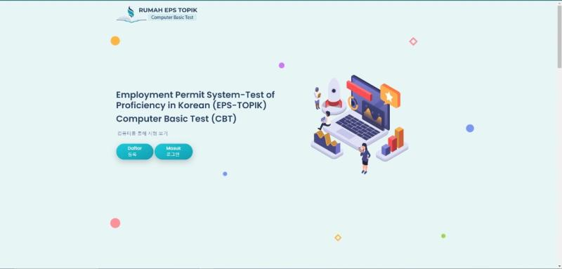
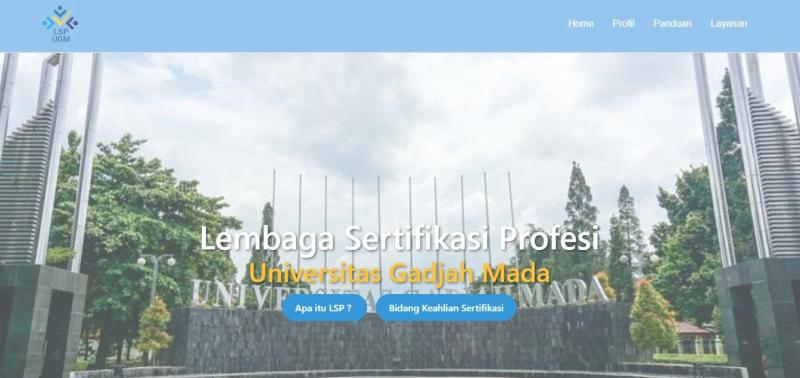
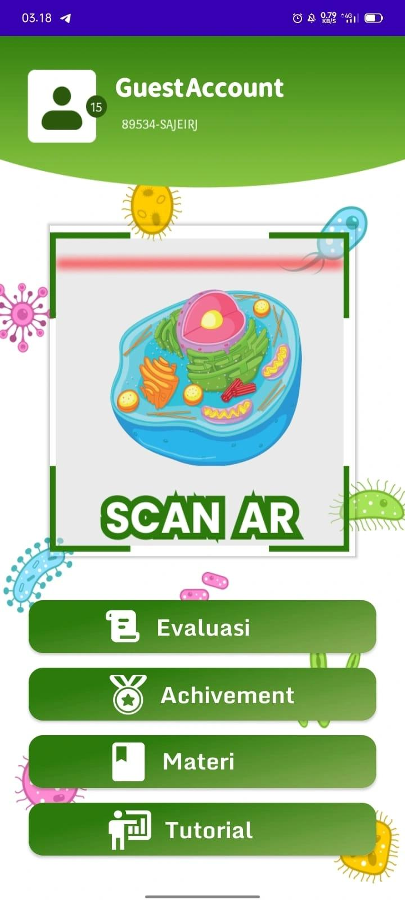
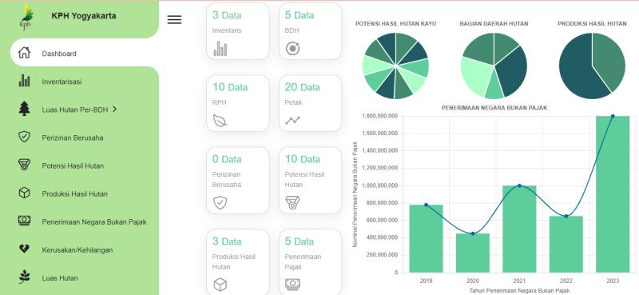

About Me
Saya adalah seorang Junior Web Developer dengan background pendidikan saya di SMK Negeri 2 Surakarta dengan Jurusan Rekayasa Perangkat Lunak dan saat ini
Saya sedang menempuh pendidikan Sarjana di Universitas Amikom Yogyakarta dengan Program Studi yang saya minati Sistem Informasi
Minat dan Pencapaian
Saya memiliki minat yang tinggi pada bidang Information Technology(IT), Semenjak saya duduk di bangku SMK saya memiliki beberapa sertifikat dan salah satunya
Kompetisi antar Kota Surakarta dalam bidang Web Technologies, Selain itu saya kerap mengikuti pelatihan dan sertifikasi antara lain seperti Badan Nasional Sertifikasi Profesi (BNSP)
sertifikasi perusahaan dan pelatihan diklat yang diselenggarakan Sinarmas, dan juga Saya memiliki pengalaman Magang tepatnya di Sekolah Vokasi Universitas Gadjah Mada sebagai Software Programmer.
Skill atau Expertise
HTML, CSS, MySQL, PHP Laravel, Canva, Microsoft Office, Presentation, Moderator
Experience and Certification
Project
Rumah EPS Topik

rumahepstopik.com
Rumah EPS Topik merupakan website untuk pelatihan Bahasa Korea
(LSP) Lembaga Sertifikasi Profesi (UGM) Universitas Gadjah Mada

lsp.ugm.ac.id
Lembaga Sertifikasi Profesi Universitas Gadjah Mada (LSP UGM) adalah lembaga pionir yang memberikan sertifikasi kepada mahasiswa aktifnya. Sertifikat yang diberikan oleh LSP UGM adalah sertifikat yang diakui oleh Badan Nasional Sertifikasi Profesi (BNSP), mengukuhkan kualitas dan kemampuan peserta didik.
Aplikasi Biomastery

Aplikasi Android - Download
Biomastery merupakan aplikasi Android dengan menggunakan bahasa Java dan gabungan dengan Unity dan Vuforia, dalam aplikasi ini
memiliki inti fungsi Scan Object untuk memunculkan 3D Model atau yang disebut (AR) Augmented Reality serta menggunakan lisensi Vuforia Engine
KPH Perhutanan

kph.trpl.space
KPH Perhutanan merupakan website untuk mengisi data-data Hutan yang mencakup kualitas, dsb.